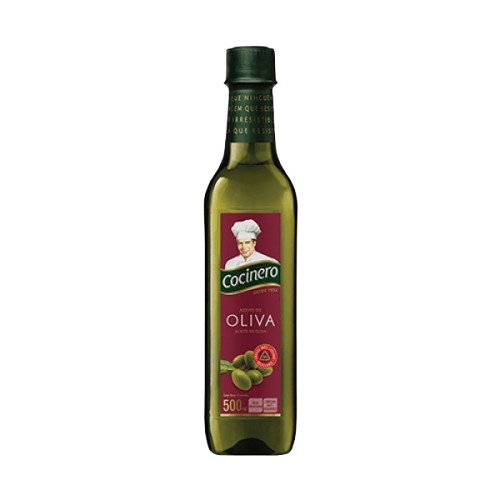
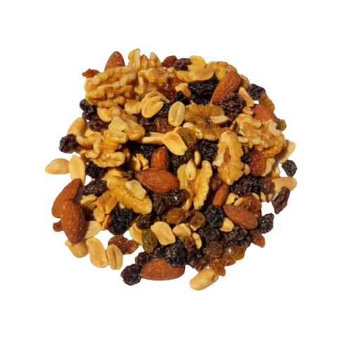

Aceite
-
Aceite de oliva
- 
Huevos
-
Maple de huevo blanco
 1/2 docena de huevos blancos
1/2 docena de huevos blancos
 Maple de huevo color
Maple de huevo color
 1/2 docena de huevos color
1/2 docena de huevos color

Frutos secos
-
Nueces
 Mix tropical
Mix tropical
 Mix energetico
Mix energetico
-  Almendra
 Castañas
Castañas
 Mani
Mani